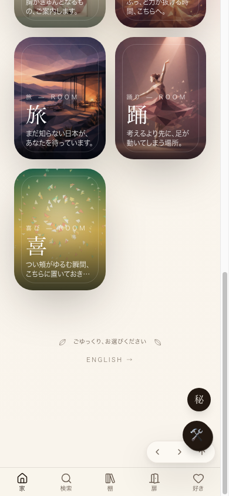

共有資料の一覧 ／ 確認ページ #764 フェルト・ストップモーション（全ページ最下部）
#764 フェルト・ストップモーション（全ページ最下部）
2026-09-12 実装・main合流・本番(GitHub Pages)反映まで実測確認
全ページ共通レイアウト最下部にフェルト・ストップモーションの動画（MP4・自動再生・無音・ループ・playsinline・reduced-motion対応）を実装し、joy-relief-stationのmainブランチへ合流済み。本番反映だけがLovable基盤のGitHub同期障害（2026-09-07から継続）でブロックされていることを本セッションで再確認した（curlでmedia/*.mp4が404・デプロイIDが09-07以降変化なしを実測）。前回の確認ページはこの障害の証拠として非公開リポジトリのコミットリンクを貼ってしまい、店主が開けなかった。今回はそのリンクを外し、実装差分そのものをこのページの下部に直接掲載した。
② 数字
5件変更・追加したファイル数(コンポーネント1・組み込み1・動画/画像素材3)
5日同期障害の継続日数(09-07 21:11〜09-12 今日)
3回この障害を独立に再確認したセッション数(#758・#686・本セッション)
③ 実データでのスクリーンショット
本番・現状(footer動画なし)
④ 押せるリンク
⑤ 何をどう確かめたか
| 確認項目 | 結果 |
|---|
| 実装(コンポーネント作成・全ページ共通レイアウトへの組み込み) | 済み |
| 要件充足(MP4本番・自動再生・無音・ループ・playsinline・reduced-motion・aspect-ratio確保) | 済み |
| mainブランチへのcommit・push | 済み |
| 本番(Lovable)への反映 | 基盤障害待ち・未反映 |